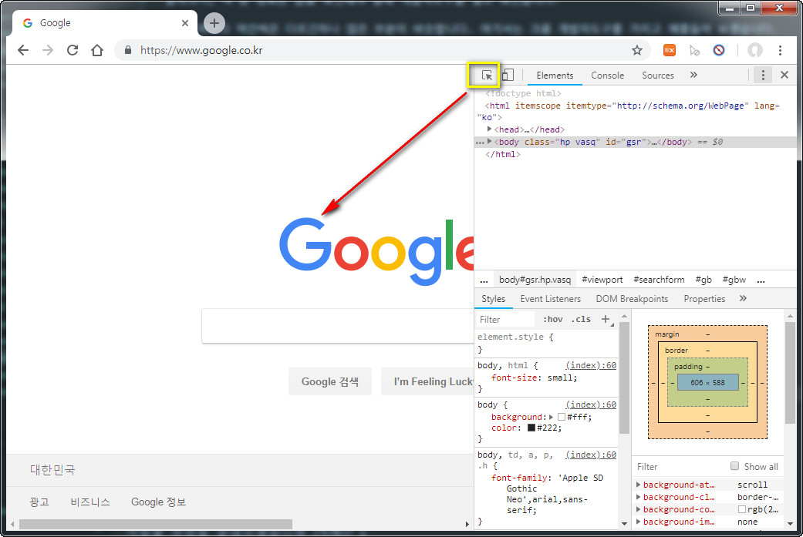

개발자 도구 실제 속성값 확인
개발자 도구는 실제로 상당이 자주 사용하는 도구 입니다.
글자크기, 색 등 정확한 값을 확인해야 할때 개발자도구를 열고 확인합니다.
브라우저마다 약간씩은 다르긴하나 많은 부분이 비슷합니다. 여기서는 크롬 개발자도구를 가지고 예를들어 보겠습니다.
크롬에서 F12를 누르면 개발자 도구가 나옵니다.
또는 Ctrl+Shift+I 단축키를 눌러도되고, 웹페이지에서 마우스 우측버튼을 눌러 메뉴에서 검사를 눌러도 됩니다.

개발자도구 우측에 더보기를 눌러 레이아웃을 변경할 수도 있습니다.

오른쪽 아이콘 모양을 눌러 레이아웃을 변경해보겠습니다.

개발자 도구가 오른쪽에 위치한 경우입니다.

요소 스타일 확인하기
인스펙터를 클릭한후 해당 요소를 클릭하면 해당 요소의 정보가 나옵니다.

마우스를 갖다대면 해당 요소가 하이라이트 됩니다.

클릭하면 해당요소의 정보를 볼 수 있습니다.

개발자 도구를 사용하면 현재 배치되어있는 html 구조, 클래스, 아이디 등등의 정보를 알 수 있고, CSS와 같은 정보도 손쉽게 눈으로 확인할 수 있습니다. 이 외에 더 많은 정보를 개발자 도구에서 확인 할 수 있습니다.